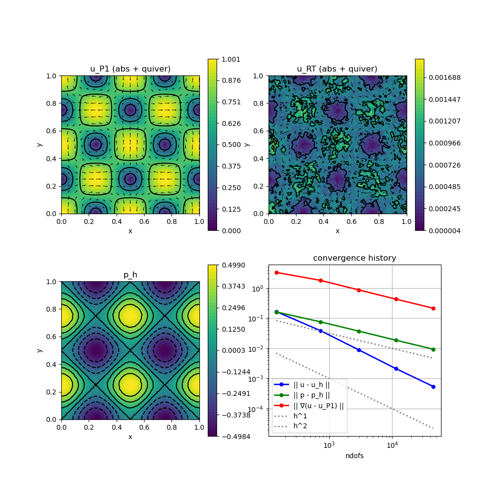

224 : Stokes $(P1 \oplus RT0) \times P0$
This example computes the velocity $\mathbf{u}$ and pressure $\mathbf{p}$ of the incompressible Navier–Stokes problem
\[\begin{aligned} - \mu \Delta \mathbf{u} + \nabla p & = \mathbf{f}\\ \mathrm{div}(u) & = 0 \end{aligned}\]
with exterior force $\mathbf{f}$ and some parameter $\mu$ and inhomogeneous Dirichlet boundary data.
The problem will be solved by a $(P1 \oplus RT0) \times P0$ scheme suggested by Li/Rui,arXiv:2012.01689 [math.NA]. The velocity space employs continuous P1 functions plus additional (only H(div)-conforming) RT0 functions and a P0 pressure space leading to an exactly divergence-free discrete velocity.
module Example224_StokesHdivP1RT
using GradientRobustMultiPhysics
using ExtendableGrids
using GridVisualize
using SimplexGridFactory
using Triangulate
# flow data for boundary condition, right-hand side and error calculation
function get_flowdata(ν, nonlinear)
u = DataFunction((result, x, t) -> (
result[1] = exp(-8*pi*pi*ν*t)*sin(2*pi*x[1])*sin(2*pi*x[2]);
result[2] = exp(-8*pi*pi*ν*t)*cos(2*pi*x[1])*cos(2*pi*x[2]);
), [2,2]; name = "u", dependencies = "XT", bonus_quadorder = 6)
p = DataFunction((result, x, t) -> (
result[1] = exp(-8*pi*pi*ν*t)*(cos(4*pi*x[1])-cos(4*pi*x[2])) / 4
), [1,2]; name = "p", dependencies = "XT", bonus_quadorder = 4)
∇p = ∇(p)
f = DataFunction((result, x, t) -> (
result[1] = 8*pi*pi*ν*exp(-8*pi*pi*ν*t)*sin(2*pi*x[1])*sin(2*pi*x[2]);
result[2] = 8*pi*pi*ν*exp(-8*pi*pi*ν*t)*cos(2*pi*x[1])*cos(2*pi*x[2]);
if !nonlinear
eval_data!(∇p, x, t)
result .+= ∇p.val;
end;
), [2,2]; name = "f", dependencies = "XT", bonus_quadorder = 4)
return u, p, ∇(u), f
end
# everything is wrapped in a main function
function main(; μ = 1e-3, nlevels = 5, Plotter = nothing, verbosity = 0, T = 0, α = 2.0, lump = true)
# set log level
set_verbosity(verbosity)
# FEType
FETypes = [H1P1{2}, HDIVRT0{2}, H1P0{1}]
# get exact flow data (see above)
u,p,∇u,f = get_flowdata(μ, false)
# define problem
Problem = PDEDescription("Stokes problem")
add_unknown!(Problem; equation_name = "momentum equation (Pk part)", unknown_name = "u_P1")
add_unknown!(Problem; equation_name = "momentum equation (RTk part)", unknown_name = "u_RT")
add_unknown!(Problem; equation_name = "incompressibility constraint", unknown_name = "p")
# add Laplacian for both velocity blocks
add_operator!(Problem, [1,1], LaplaceOperator(μ))
# add stabilising term(s) for RTk part
ARR = BilinearForm([Divergence, Divergence]; name = "α (div u_RT,div v_RT) $(lump ? "[lumped]" : "")", factor = α*μ, APT = lump ? APT_LumpedBilinearForm : APT_BilinearForm)
add_operator!(Problem, [2,2], ARR)
# add Lagrange multiplier for divergence of velocity
add_operator!(Problem, [1,3], LagrangeMultiplier(Divergence))
add_operator!(Problem, [2,3], LagrangeMultiplier(Divergence))
add_constraint!(Problem, FixedIntegralMean(3,0))
# add boundary data and right-hand side
P1data = add_boundarydata!(Problem, 1, [1,2,3,4], BestapproxDirichletBoundary; data = u)
add_boundarydata!(Problem, 2, [1,2,3,4], CorrectDirichletBoundary{1}; data = u) # <- RT part corrects (piecewise normal flux integrals of) P1 part
add_rhsdata!(Problem, 1, LinearForm(Identity, f))
add_rhsdata!(Problem, 2, LinearForm(Identity, f))
# show final problem description
@show Problem
# prepare error calculation
L2VelocityError = L2ErrorIntegrator(u, [Identity, Identity]; time = T)
L2PressureError = L2ErrorIntegrator(p, Identity; time = T)
H1VelocityError = L2ErrorIntegrator(∇u, Gradient; time = T)
L2NormR = L2NormIntegrator(2 , [Identity])
L2VeloDivEvaluator = L2NormIntegrator(1 , [Divergence, Divergence])
Results = zeros(Float64,nlevels,5); NDofs = zeros(Int,nlevels)
# loop over levels
Solution = nothing
xgrid = nothing
for level = 1 : nlevels
# generate unstructured grid
xgrid = simplexgrid(Triangulate;
points=[0 0 ; 0 1 ; 1 1 ; 1 0]',
bfaces=[1 2 ; 2 3 ; 3 4 ; 4 1 ]',
bfaceregions=[1, 2, 3, 4],
regionpoints=[0.5 0.5;]',
regionnumbers=[1],
regionvolumes=[4.0^(-level-1)/2])
# generate FES spaces and solution vector
FES = [FESpace{FETypes[1]}(xgrid), FESpace{FETypes[2]}(xgrid), FESpace{FETypes[3]}(xgrid; broken = true)]
Solution = FEVector(["u_P1", "u_RT", "p_h"],FES)
# solve
solve!(Solution, Problem; time = T, maxiterations = 50)
# compute L2 and H1 errors and save data
NDofs[level] = length(Solution.entries)
Results[level,1] = sqrt(evaluate(L2VelocityError,[Solution[1], Solution[2]]))
Results[level,2] = sqrt(evaluate(L2PressureError,Solution[3]))
Results[level,3] = sqrt(evaluate(H1VelocityError,Solution[1]))
Results[level,4] = sqrt(evaluate(L2NormR,Solution[2]))
Results[level,5] = sqrt(evaluate(L2VeloDivEvaluator,[Solution[1], Solution[2]]))
end
# plot
p = GridVisualizer(; Plotter = Plotter, layout = (2,2), clear = true, resolution = (1000,1000))
scalarplot!(p[1,1],xgrid,view(nodevalues(Solution[1]; abs = true),1,:), levels = 3, colorbarticks = 9, title = "u_P1 (abs + quiver)")
vectorplot!(p[1,1],xgrid,evaluate(PointEvaluator(Solution[1], Identity)), spacing = 0.05, clear = false)
scalarplot!(p[1,2],xgrid,view(nodevalues(Solution[2]; abs = true),1,:), levels = 3, colorbarticks = 9, title = "u_RT (abs + quiver)")
vectorplot!(p[1,2],xgrid,evaluate(PointEvaluator(Solution[2], Identity)), spacing = 0.05, clear = false)
scalarplot!(p[2,1],xgrid,view(nodevalues(Solution[3]),1,:), levels = 7, title = "p_h")
convergencehistory!(p[2,2], NDofs, Results[:,1:3]; add_h_powers = [1,2], X_to_h = X -> X.^(-1/2), ylabels = ["|| u - u_h ||", "|| p - p_h ||", "|| ∇(u - u_P1) ||"])
# print convergence history
print_convergencehistory(NDofs, Results; X_to_h = X -> X.^(-1/2), ylabels = ["|| u - u_h ||", "|| p - p_h ||", "|| ∇(u - u_P1) ||", "|| u_R ||", "|| div(u_h) ||"])
end
endThis page was generated using Literate.jl.
Default output:
julia> Example224_StokesHdivP1RT.main()
Problem =
PDE-DESCRIPTION
===============
system name = Stokes problem
id | unknown name / equation name
[1] | u_P1 / momentum equation (Pk part)
[2] | u_RT / momentum equation (RTk part)
[3] | p / incompressibility constraint
LHS block | PDEOperator(s)
[1,1] | 0.001 (∇u,∇v) (APT = SymmetricBilinearForm, AT = ON_CELLS, regions = [0])
[1,2] | none
[1,3] | (div(v),q) (APT = BilinearForm, AT = ON_CELLS, regions = [0])
[2,1] | none
[2,2] | α (div u_RT,div v_RT) [lumped] (APT = LumpedBilinearForm, AT = ON_CELLS, regions = [0])
[2,3] | (div(v),q) (APT = BilinearForm, AT = ON_CELLS, regions = [0])
[3,1] | none
[3,2] | none
[3,3] | none
RHS block | PDEOperator(s)
[1] | (f, id(v)) (APT = LinearForm, AT = ON_CELLS, regions = [0])
[2] | (f, id(v)) (APT = LinearForm, AT = ON_CELLS, regions = [0])
[3] | none
BoundaryOperator[1] : BestapproxDirichletBoundary -> [1, 2, 3, 4]
BoundaryOperator[2] :
BoundaryOperator[3] :
GlobalConstraints[1] : Mean[3] != 0
ndofs | || u - u_h || order | || p - p_h || order | || ∇(u - u_P1) || order | || u_R || order | || div(u_h) || order |
============|==========================|==========================|==========================|==========================|==========================|
145 | 1.660e-01 0.00 | 1.608e-01 0.00 | 3.293e+00 0.00 | 2.109e-01 0.00 | 3.277e-16 0.00 |
732 | 3.839e-02 1.81 | 7.559e-02 0.93 | 1.792e+00 0.75 | 4.634e-02 1.87 | 2.874e-15 -2.68 |
2944 | 8.939e-03 2.09 | 3.726e-02 1.02 | 8.663e-01 1.04 | 1.083e-02 2.09 | 3.924e-13 -7.07 |
11401 | 2.139e-03 2.11 | 1.867e-02 1.02 | 4.293e-01 1.04 | 2.792e-03 2.00 | 3.974e-15 6.78 |
44828 | 5.463e-04 1.99 | 9.361e-03 1.01 | 2.147e-01 1.01 | 6.924e-04 2.04 | 1.457e-14 -1.90 |